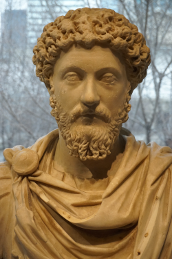
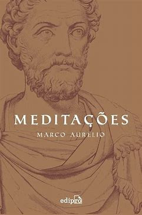

Marco Aurélio (Imperador romano) (121-180) foi imperador romano entre os anos de 161 e 180, o quarto imperador da dinastia dos Antoninos. Ficou conhecido como imperador-filósofo, pois cultivava ideias de justiça e bondade.

“Meditações” é uma obra filosófica escrita pelo imperador romano Marco Aurélio, na qual ele compartilha seus pensamentos sobre a vida, a morte e a virtude.